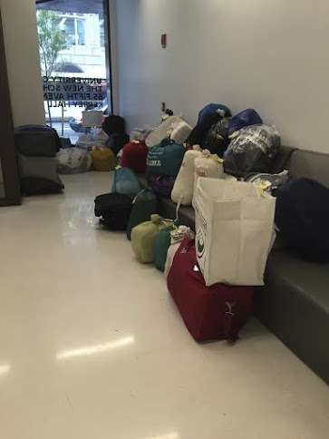

Send it Out
Amanda Manning

At 10 p.m. on a Wednesday night, a New School student realizes that they should probably do their overflowing pile of laundry that has been put off for one too many weeks. They step into the bright red elevator at Kerrey Hall; haul their load downstairs, laundry card in hand…
Not this year.
The water main break that occurred on 5th Avenue on January 14, 2014 flooded levels L1 and L2 of the University Center right before it opened. An exercise studio, lounge space, bicycle storage space and laundry room are a few of the things that are located on the two bottom levels that were destroyed.
“The water main break was a disaster that we’ve all had to work through,” said David Howe, the area coordinator for Kerrey Hall.
Since the spring semester in 2014, students at Kerrey Hall have had three alternative options for doing their laundry. They can use the laundry rooms at Loeb Hall or the 13th Street Residence Hall, a local Laundromat, or use an outside service that has partnered with the New School, The Laundry Center.
If students choose the option of The Laundry Center, they will wash, dry, and fold the student’s laundry by the next day. To have this service, a Kerrey Hall resident must book the order the night before one of the drop-off days, on Tuesdays, Wednesdays, and Thursdays. Then, they drop off their laundry in a tightly sealed bag in the Kerrey Hall lobby between the designated hours of 8 and 11:30 a.m., when there is an attendant present from The Laundry Center.
Students can drop off up to 18 pounds of laundry to be sent off to the Laundry Center at 56th and 8th for $2.50, the same price it is for a New School student to wash one load of laundry. That’s not counting the price for drying the clothes if the students were using their usual laundry room.
The owner of The Laundry Center, Charles Sakkal said that The New School is subsidizing 70% of this bill. The Laundry Center typically charges $1.05 per pound to its customers.
Regardless of the discounted price, some residents of Kerrey Hall believe that all of these options are a hassle, compared to being able to do laundry at their own convenience in the basement. “I just wish they had the facilities here,” said Sophomore Jessica Diaz. “It’s such a hassle either way of what you choose.”
Other students have chosen the option of using the 13th street residence, rather than the laundry service. “I go with my suitcase and my other bag,” said freshman Tiffany Wond. “I look like a crazy person walking down the street.”
Some Kerrey Hall residents chose to use the dorms instead of the laundry service because they are particular about their clothes. “I don’t want other people touching my clothes,” said sophomore Jeana Lindo.
The Laundry Center understands why some are particular about their clothes. “Laundry is such an intimate item,” said owner Sakkal. “Our job is to pick up your stuff and take care of it carefully.”
Not all items have been taken care of carefully. “My only pair of jeans shrunk,” said sophomore Diaz. “So, I can’t really wear them right now.”
Another student had a similar altering issue. “Two of my shirts are pink,” said Junior Barbara Darim. “I had to throw one away.”
Students say that they always receive an email when their laundry is ready to be picked up in the lobby. When they pick it up, a tag tells them who did their laundry.
During the week of October 27, 2014, the New School added an additional drop off day of Wednesday for students who are using the Laundry Service. David Howe, the area coordinator for Kerrey Hall said in an email to students that this is because The Laundry Center had difficulty processing all the Tuesday laundry in a timely manner.
Despite some of these complications, many students still choose The Laundry Center. “I do prefer it,” said Sophomore Cassie Basford. “Even if there is some glitches.”

Others have also had positive experiences with The Laundry Center. “It’s kind of convenient,” said sophomore Ann Dwyer. “It comes back to you folded, and you can’t really beat the price.”
Junior Haley Kemp said that the service was easy to use, because you didn’t have to do much. Other Kerrey Hall residents agreed. “It’s nice to be able to drop it off when you’re busy and don’t have time,” said Basford.
Both The Laundry Center and The New School said that they had not heard of any colleges partnering with an outside laundering service for their students before. “Proximity, cost, and convenience,” stated Lutomski for the reasons why the school partnered with The Laundry Center. “They were able to do what we needed.”
David Howe said students had concerns even when they had their own laundry machines in the basement. “When residents share concerns about any one of these three options, “ Howe said. “We work through them together, and I share my personal experiences of what has worked for me.”
Robert Lutomski, the assistant vice president of student housing says that level L2 is set to reopen on January 26, 2015.
Perhaps in the spring 2015 semester, students at the third most expensive school in the country will have fewer complaints, with their laundry room restored in place.